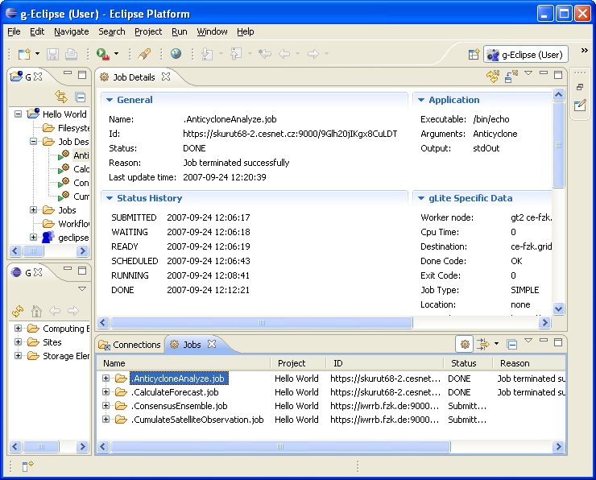

To see more information about submitted job, on view Jobs or Grid Projects select any Job and press F3: 
Job Details view will be opened. This view show information about one, currently selected job.
To see details for other job just click this job on view Jobs or Grid Projects.